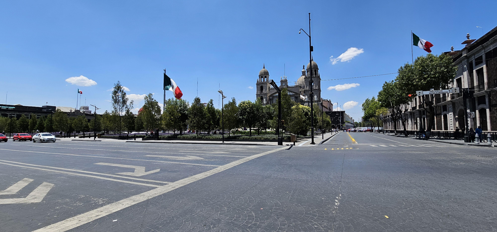

>
<
C E I E G
COMITÉ ESTATAL DE INFORMACIÓN ESTADÍSTICA Y GEOGRÁFICA
DEL ESTADO DE MÉXICO
Documentos Programáticos
Actas y Minutas del CEIEG
Informes Semestrales
Normatividad
Convenios
Contacto
Documentos Programáticos
Actas y Minutas del CEIEG
Informes Semestrales
Normatividad
Convenios
Contacto
El Comité Estatal de Información Estadística y Geográfica (CEIEG) se constituye como una instancia colegiada de participación y consulta, en donde confluyen los representantes de las áreas administrativas con actividades estadísticas y geográficas del Estado de México, sus municipios y el INEGI, para la ejecución y cumplimiento de los principios, bases y normas establecidas en el Sistema Nacional de Información Estadística y Geografía (SNIEG) y el Sistema Estatal de Información e Investigación Geográfica, Estadística y Catastral del Estado de México (SE).
EL CEIEG del Estado de México está integrado por:
Las Secretarías de Estado Estatales
Órganos autónomos
Organismos públicos adscritos a las Secretarías Estatales
Organismos públicos descentralizados
Organismos públicos desconcentrados
Unidades administrativas
Invitados permanentes
(Representantes de los Ayuntamientos)
Invitados
(Representantes de las instituciones sociales, iniciativa privada, así como del sector académico cuyas actividades se vinculen con los objetivos del Comité)
El INEGI
A N T E C E D E N T E S
El 15 de febrero de 2012, en el marco de la Ley del Sistema Nacional de Información Estadística y Geográfica, en lo sucesivo la
“LSNIEG”
, el
“ESTADO”
y el
“INEGI”
suscribieron un Convenio para formalizar la constitución y operación del Comité Técnico Especializado denominado: Comité Estatal de Información Estadística y Geográfica, del Estado de México.
Asimismo, con fecha 15 de noviembre de 2019, el
“ESTADO”
y el
“INEGI”
, suscribieron un Acta de Conformidad para la Continuidad del Convenio para la Constitución y Operación del Comité Estatal de Información Estadística y Geográfica en el Estado de México.